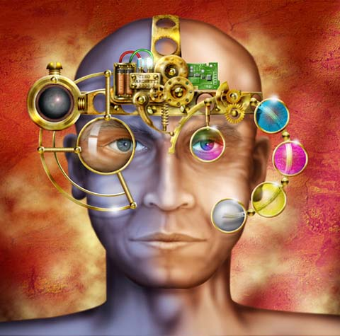

Ciro Marchetti
art of exotic machines
Ciro Marchetti
art of exotic machines
Exhibit posted Sept. 28, 2002Ciro Marchetti was raised in Great Britain and graduated from the Croydon College of Art. He is a graphic designer and president of a corporate design firm in Miami, Florida, where he has lived for more than ten years. He has a personal collection of old mechanical instruments and artifacts such as compasses, theodolytes, sextants and kaleidoscopes, and he keeps "assorted mechanical elements, wheels, cogs, springs, etc....a virtual spare parts shop, so to speak" as a separate file on his computer. These are strongly represented in his art. He writes, "When I 'assemble' these machine parts [in Photoshop] I'm aiming to build a visually interesting combination of shape and form along with a degree of mechanical credibility. These combinations are transformed within my illustrations into exotic machines, somewhat dated in style and engineering, yet capable of function beyond the current capacity of today's real world science."
Focal Depth
 |